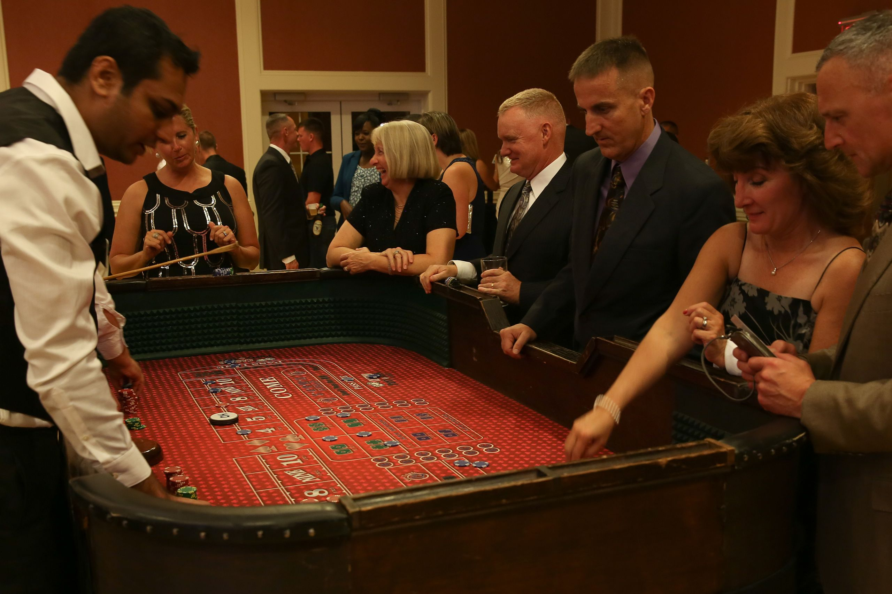

Set exercises
Dice Rolls.

In Craps, each roll of the dice belongs to one of several sets of rolls that are used to resolve bets. There are only 36 possible dice rolls, but it’s annoying to define the various sets manually. Here’s a multi-step procedure that produces the various sets of dice rolls around which you can define the game of craps.
First, create a sequence with 13 empty sets, call it dice. Something like [ set() ]*13 doesn’t work because it makes 13 copies of a single set object. You’ll need to use a for statement to evaluate the set function 13 different times. What is the first index of this sequence? What is the last entry in this sequence?
Second, write two, nested, for-loops to iterate through all 36 combinations of dice, creating 2-tuples. The 36 2-tuples will begin with (1,1) and end with (6,6). The sum of the two elements is an index into dice. We want to add each 2-tuple to the appropriate set in the dice sequence.
When you’re done, you should see results like the following:
[ ]:
dice[7]
set([(5, 2), (6, 1), (1, 6), (4, 3), (2, 5), (3, 4)])
Now you can define the various rules as sets built from other sets.
lose
On the first roll, you lose if you roll 2, 3 or 12. This is the set dice[2] | dice[3] | dice[12]. The game is over.
win
On the first roll, you win if you roll 7 or 11. The game is over.
point
On the first roll, any other result (4, 5, 6, 8, 9, or 10) establishes a point. The game runs until you roll the point or a seven.
craps
Once a point is established, you win if you roll the point’s number. You lose if you roll a 7.
Once you have these three sets defined, you can simulate the first roll of a craps game with a relatively elegant-looking program. You can generate two random numbers to create a 2-tuple. You can then check to see if the 2-tuple is in the lose or win sets.
If the come-out roll is in the point set, then the sum will let you pick a set from the dice sequence. For example, if the come-out roll is (2,2), the sum is 4, and you’d assign dice[4] to the variable point; this is the set of winners for the rest of the game. The set of losers for the rest of the game is always the craps set.
The rest of the game is a simple loop, like the come-out roll loop, which uses two random numbers to create a 2-tuple. If the number is in the point set, the game is a winner. If the number is in the craps set, the game is a loser, otherwise it continues.
You can use the file crapts.py as starter template for this exercise
[116]:
# First, create a sequence with 13 empty sets
[117]:
# Second, write two, nested, for-loops to iterate through all 36 combinations of dice, creating 2-tuples.
[118]:
# third, create the actual program
© www.linuxtopia.org